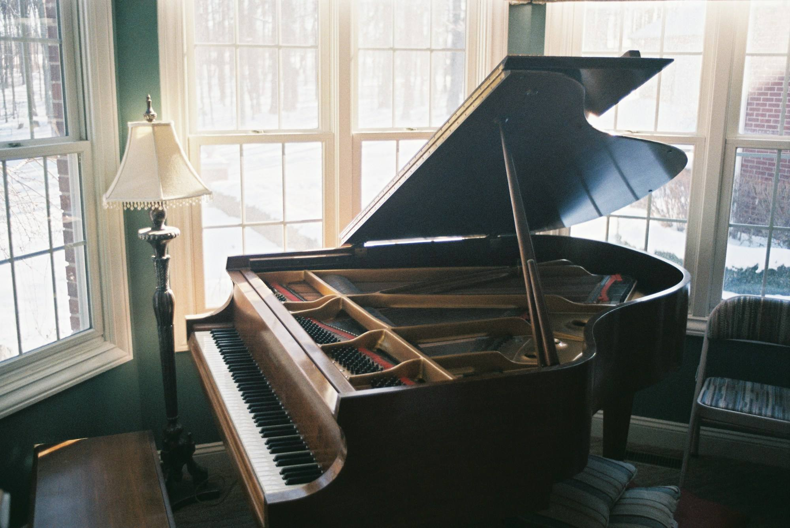
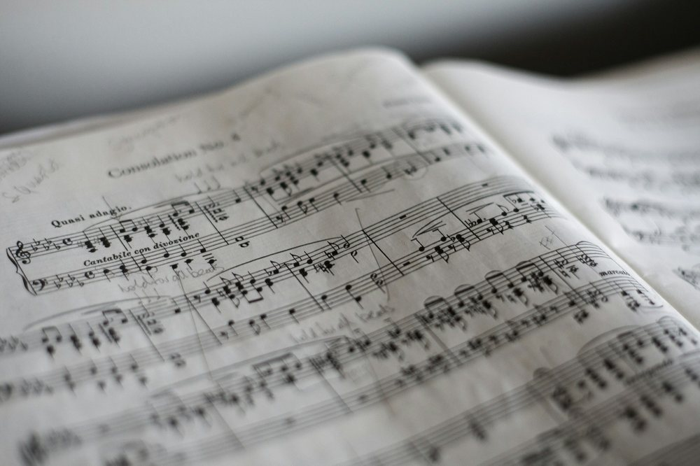
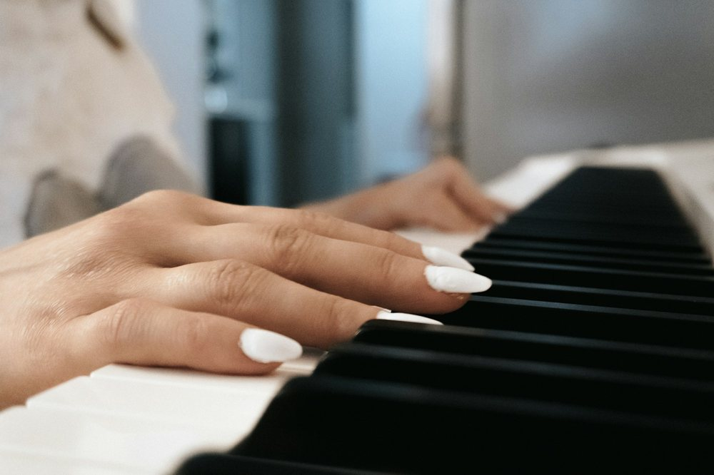

3歳〜就学前
はじめてのピアノ
最初の数か月は、手をたたいてリズムを取る、鍵盤の白と黒を見分ける、指を1本ずつ動かす、から。椅子に座っていられる時間に合わせて、30分の中で遊びと練習を入れ替えます
30分・月3回
札幌市内の住宅街、一軒家の一室で
3歳のリズム遊びから、大人の「この曲が弾きたい」まで。先生ひとりと生徒ひとりの、30分から60分の個人レッスンです

1
3歳〜就学前
最初の数か月は、手をたたいてリズムを取る、鍵盤の白と黒を見分ける、指を1本ずつ動かす、から。椅子に座っていられる時間に合わせて、30分の中で遊びと練習を入れ替えます
30分・月3回

小学生・中学生
教本を1冊ずつ進めながら、学校の合唱の伴奏や、好きなアニメの曲も練習します。希望する人は、9月のグレードテストに向けた準備もできます
30分・45分・月3回

高校生・大人
子どものころに習っていた人も、楽譜を読んだことがない人も。弾きたい曲を1つ決めて、そこまでに必要なことだけを順に練習します。平日の午前と土曜日に大人の時間を取っています
45分・60分・月2回か3回
2
レッスンは予約制です。開いた日の曜日に印が付きます。空いている時間は体験レッスンのときにお伝えします
3
年36回（月3回）が基本です。金額はすべて税込で、架空の設定です
| コース | 時間 | 月謝 |
|---|---|---|
| はじめてのピアノ | 30分・月3回 | 6,000円 |
| 小学生・中学生 | 30分・月3回 | 6,500円 |
| 45分・月3回 | 8,000円 | |
| 高校生・大人 | 45分・月2回 | 6,000円 |
| 60分・月3回 | 10,500円 |
4
音楽大学のピアノ科を出たあと、楽器店の教室で12年教えてきた先生が、2021年に自宅で始めた教室です。生徒は30人ほどで、同じ先生が最初の体験から発表会までずっと見ます
先生の経歴と教室の数字は、制作サンプルのための架空の設定です
5
五線の上の音符が、それぞれの月の行事です
6
架空の教室のため、申し込みは受け付けていません
7
8
はじめのうちは電子ピアノや、鍵盤の数が少ないキーボードでも練習できます。続けていく中で、ピアノを買うかどうかを一緒に考えましょう
前の日までにご連絡いただければ、同じ月の空いている時間に振り替えます。振替は月に1回までです
出るかどうかは自由です。4月のおさらい会は教室の中で、家族の前で1曲弾くだけの小さな会です
大丈夫です。弾きたい曲を1つ決めて、その曲に出てくる音から読み方を覚えていきます
続けての時間に2人分のレッスンを入れられます。待っている間は隣の待合スペースを使ってください